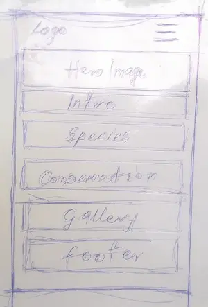
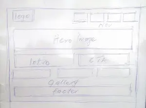

Wild Cats of the World - Site Plan
1. Site Name
Wild Cats of the World
This name clearly shows that the site covers wild cat species globally.
Optional domain: wildcatsoftheworld.org
2. Site Purpose
The site educates visitors about wild cats by providing species profiles, conservation updates, and a photo gallery. It also raises awareness of threats and promotes conservation actions.
3. Scenarios
- Which wild cat species are endangered and where do they live?
- How can I help or donate to wild cat conservation programs?
4. Color Schema
- Primary (#2C3E50) – used for headings and header background.
- Accent (#E67E22) – used for links and highlights.
5. Typography
- Roboto – body text
- Merriweather – headings
6. Wireframe
Mobile View
Desktop View
Wireframes show the planned layout for the homepage in mobile and desktop formats.